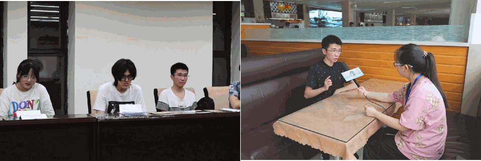
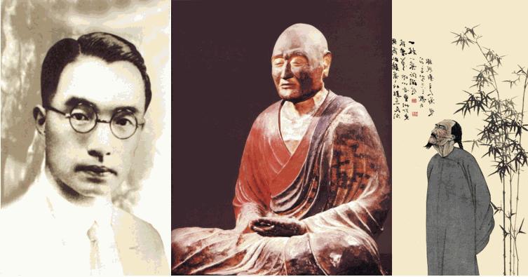

【徜扬恣肆·十三】不识庐山真面目，只缘身在此山中
不识庐山真面目
行者无疆
只缘身在此山中
_______
我生在扬州，长在扬州，二十年的光阴在扬州度过。
我因这个身份被实践团录用为后勤组。但让我向大家介绍起我的故乡时，却感到词穷；让我为大家制订游览扬州的路线时，却感到难堪；
当我查阅了各种资料之后，才发觉我对我故乡知之甚少，不可不谓之“不识庐山真面目，只缘身在此山中”。

我花了两天查看地图，确定地点规划路线，得到实践方案，最终却被南京疫情的无妄之灾取消了行程，原本那带大家领略扬州美景，享受扬州美食，感受扬州人文的想法幻灭，可惜且无奈。
和队长一番商量，并查找相关资料，后又规划了一个线上行程，饱含遗憾草草收尾。
我在线上为大家介绍扬州，也翻起了我泛黄的岁月。
与长辈一起吃着热气腾腾的早茶，大家庭温馨且融洽；与发小一起在扬州瘦西湖游览，称自己就是那下江南游扬州的乾隆；与高中同学在教室里偷偷吃着烧烤，恨不得把屋顶掀开散气味……
扬州见证了我从小长到大，我的记忆都存储在扬州的大街小巷里，扬州记得我，我也记得扬州…
以前在扬州生活的我如同被摩耶之幕遮蔽了双眼一般，这一切，只有我成为那烂柯人时，才察觉到。

扬州的文化传承和传播，从鉴真大师坚韧不拔的东渡日本传播东方佛教文化和中国文化；从隋炀帝的琼花梦，到康熙祖孙同下江南；从文人墨客们的诗词歌赋，到扬州八怪的书画笔墨；从内敛不张扬的园林景观营造到书画及雕版印刷的兴旺发达都可以看到她的踪影。
他们中有一代君王，一世霸主，一群鼎盛诗家，一批锦心绣口的文章太守。他们把扬州视作一幅曼妙鲜丽的图画，编织在他们长吟短叹的杯盏中，挡不住的诱惑，止不尽的传说，流传在大运河边、瘦西湖畔、杨柳晓岸，一如青草春生，岁岁年年。
不管是他们还是我们
都是被摩耶之幕蒙蔽的烂柯人
-ＥＮＤ-
来源 | 行者无疆实践团
文字 | 朱华玮
排版 | 赵庭芳
审核 | 付媛 康艳虎